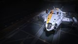

Hardpoints
2L · 1M · 3S
The Alliance Chieftain leads the AX rankings by evasion, not brute force. Its agility physically dodges Interceptor lightning that destroys slower hulls; three class-4 military slots pack Guardian module reinforcement against module-stripping fire; and the 2L 1M 3S hardpoint mix carries a full AX weapon suite. Cheap, forgiving, and the ship most commanders use to learn Thargoid combat.

This ship's 1–100 suitability rating reflects its fully-engineered fit for this role, scored against every ship in the role. See how ships are rated.
Fighting Thargoids is a different discipline from fighting humans — Interceptors hit with lightning that strips modules, caustic clouds that eat your hull, and shutdown fields that kill your systems — and the Alliance Chieftain answers all of it. It's agile enough to physically dodge the lightning attacks that punish slower ships, its three class-4 military slots take Guardian Module Reinforcement to survive what does land, and its 2L 1M 3S hardpoints carry a balanced AX weapon suite.
It's cheap (~18.6M Cr), nimble, and forgiving — the ship most commanders cut their teeth on against Cyclops and Basilisk Interceptors, and it scales up to the tougher ones with practice. It's not the tankiest AX hull (its sibling the Challenger is sturdier) nor the highest-DPS (the Krait Mk II hits harder), but its balance of evasion, hardening and firepower makes it the anti-Xeno benchmark — the default recommendation for learning to kill Thargoids.
Anti-Xeno combat: hunting Thargoid Interceptors (Cyclops through Medusa), clearing scout swarms, Anti-Xeno Conflict Zones, and Maelstrom and Titan operations — the agile AX fighter for learning and scaling the discipline.
Four things make the Chieftain the AX benchmark:
It's less durable than the heavier Challenger and lower-DPS than a Krait Mk II, and its medium hull can't soak punishment the way a capital can. Against the toughest Interceptors (Hydra) or in heavy AXCZ, a tankier or higher-damage ship may serve better. The Chieftain's case is balanced agility-plus-hardening for learning and general AX work — the all-round benchmark, not the extreme at any axis.
Both tables rate ships for anti-Xeno combat specifically. The role column is the hardpoint loadout — the basis for an AX weapon suite. Evasion, hardening and heat management matter as much as raw mounts.
| Ship | Class | Hardpoints | Pros & cons vs Alliance Chieftain | Rating |
|---|---|---|---|---|
| Alliance Chieftain this | Medium | 2L 1M 3S | — this hull (baseline) | 90 |
| Krait Mk II | Medium | 3L 2M | More large mounts; higher DPS; SLFNo military slots; less agile | 89 |
| Alliance Challenger | Medium | 1L 3M 3S | Tankier; same 3 military slotsSlower; less agile | 88 |
| Corsair | Medium | 3L 3M | Six mounts; modernNo military slots; weaker shields | 82 |
| Krait Phantom | Medium | 2L 2M | Fast; good range to reach sitesNo military slots; lighter | 80 |
| Python | Medium | 3L 2M | Tough; high DPSLess agile; no military slots | 80 |
Among medium AX fighters the Chieftain is the agile, well-hardened benchmark. The Krait Mk II out-damages it and the Challenger out-tanks it, but neither matches the Chieftain's blend of evasion and three module-reinforcing military slots. The default learning and all-round AX choice.
| Ship | Class | Hardpoints | Pros & cons vs Alliance Chieftain | Rating |
|---|---|---|---|---|
| Krait Mk II | Medium | 3L 2M | Higher DPS; SLFNo military slots | 89 |
| Imperial Cutter | Large | 1H 2L 4M | Apex shields; huge firepowerImperial rank; far less agile | 88 |
| Anaconda | Large | 1H 3L 2M 2S | Many mounts; tankyPonderous; can't dodge well | 86 |
| Federal Corvette | Large | 2H 2L 2M | Massive firepower; tankyFederal rank; poor agility | 84 |
| Federal Gunship | Medium | 1L 4M 2S | Many mounts; tankySlow; clumsy | 80 |
The large AX ships bring more firepower and tank but can't dodge Thargoid attacks the way the Chieftain can — evasion is king in AX. They suit heavy AXCZ and the toughest Interceptors once you've mastered the discipline; the Chieftain is where you learn it and where most pilots stay.
At ~18.6M Cr the Chieftain is cheap, with no rank gate. An AX fit — Guardian and AX weapons, module reinforcement, caustic and heat utilities — brings the all-in figure to around 45M Cr, much of it Guardian-tech material grinds rather than credits.
Its low price and forgiving handling make it the sensible first AX investment: cheap enough to lose while learning, capable enough to keep killing Interceptors long after. The main cost is unlocking the Guardian weapons and modules, not the hull.
Around 45M Cr (mostly Guardian-tech unlocks) for the benchmark Thargoid fighter — cheap, forgiving, and the ship most pilots learn the discipline in.
There is no AX-specific ARX pre-built built around the Alliance Chieftain; buy and outfit it normally through a shipyard, then unlock Guardian and AX weapons at the relevant sites.
An anti-Xeno fit: AX and Guardian weapons, module reinforcement in the military slots, and caustic/heat utilities. Initial is buy-only; AX-fitted adds the Thargoid kit; Engineered hardens mobility, shields and survivability (AX weapons themselves have limited engineering).
| Slot | Initial · buy-only | A-Rated · no eng | Engineered |
|---|---|---|---|
| Hardpoints | |||
| Large 1 | — | Gauss Cannon (AX) | Gauss Cannon — Thermal Vent |
| Large 2 | — | Gauss Cannon (AX) | Gauss Cannon — Thermal Vent |
| Medium 1 | — | AX Multi-Cannon | Enhanced AX Multi-Cannon |
| Small 1 | — | AX Multi-Cannon | Enhanced AX Multi-Cannon |
| Small 2 | — | AX Multi-Cannon | Enhanced AX Multi-Cannon |
| Small 3 | — | Guardian Shard Cannon | Guardian Shard Cannon |
| Utility Mounts | |||
| Utility 1 | — | Xeno Scanner | Xeno Scanner |
| Utility 2 | — | Caustic Sink Launcher | Caustic Sink Launcher |
| Utility 3 | — | Heat Sink Launcher | Heat Sink Launcher |
| Utility 4 | — | Shield Booster | Shield Booster — Thermal Resistant |
| Core Internals | |||
| Power Plant (6) | E | A | A — Overcharged (G5) |
| Thrusters (5) | E | A | A — Dirty Drive Tuning (G5) |
| FSD (5) | E | A | A — Increased Range (G5) |
| Life Support (4) | E | A | A — Lightweight |
| Power Distributor (5) | E | A | A — Charge Enhanced |
| Sensors (4) | E | D | D — Lightweight |
| Fuel Tank (4) | C | C | C |
| Military Slots | |||
| Military 1 (4) | — | Guardian Module Reinforcement | Guardian MRP 4 |
| Military 2 (4) | — | Guardian Module Reinforcement | Guardian MRP 4 |
| Military 3 (4) | — | Guardian Hull Reinforcement | Guardian HRP 4 |
| Optional Internals | |||
| Optional 6 | — | Shield Generator 6 (bi-weave) | Bi-Weave 6 — Thermal Resistant |
| Optional 5 | — | Guardian Hull Reinforcement 5 | Guardian HRP 5 |
| Optional 4 | — | Decontamination Limpet Controller | Decon Limpet (caustic) |
| Optional 2 | — | Module Reinforcement 2 | MRP 2 |
| Optional 2 | — | Heat Sink storage | Heat Sink storage |
| Optional 1 | — | Caustic Sink storage | Caustic Sink storage |
AX combat is about evasion and survival: dodge the lightning, soak what lands with Guardian module/hull reinforcement (the three military slots are gold here), clear caustic with sinks and a decontamination limpet, and watch heat — Gauss cannons and AX weapons run hot. The Chieftain's agility makes the dodging possible.
Buy the hull and unlock Guardian and AX weapons at the relevant Guardian/Thargoid sites.
Fill the three military slots with Guardian Module/Hull Reinforcement — the key to surviving Thargoid fire.
Add a Xeno Scanner, Caustic Sink and heat management; A-rate the cores for mobility.
AX-fitting priority:
The Chieftain itself is cheap — the real investment is unlocking Guardian weapons and module reinforcement at Guardian sites. That tech, plus its agility, is what kills Thargoids.
AX engineering hardens the ship's mobility, heat and survival — AX/Guardian weapons themselves have limited engineering. Felicity Farseer (maxed) carries the FSD; pin blueprints for remote G1→G5 application.
| Module | Blueprint | Experimental | Engineer |
|---|---|---|---|
| Thrusters | Dirty Drive Tuning (G5) | Drag Drives | Professor Palin / Mel Brandon |
| Power Plant | Overcharged (G5) | Thermal Spread | Hera Tani / Marsha Hicks |
| Bi-Weave Shield | Thermal Resistant (G5) | Fast Charge | Lei Cheung |
| HRPs / Boosters | Heavy Duty / Thermal Resistant | Deep Plating | Selene Jean / Didi Vatermann |
| Power Distributor | Charge Enhanced (G5) | Super Conduits | The Dweller |
| Frame Shift Drive | Increased Range (G5) | Mass Manager | Felicity Farseer |
Moderate ship engineering plus significant Guardian-tech unlocks — the Guardian weapons and module/hull reinforcement need material runs at Guardian sites, which is the real grind. Ship blueprints are standard. Ask for exact per-blueprint or unlock counts if needed.
Approximate progression across the three states (figures are representative, not exact rolls):
| Stat | Initial | A-rated | Engineered |
|---|---|---|---|
| Agility (dodge) | high | high | excellent |
| Module hardening | 3 mil slots | 3 mil slots | 3 mil slots |
| AX firepower | good | good | good |
| Heat management | key | key | managed |
| Survivability vs Thargoids | high | high | high |
Engineered and Guardian-equipped, the Chieftain dodges Interceptor lightning, soaks what lands behind Guardian reinforcement, and kills with Gauss and AX weapons — the balanced benchmark for Thargoid combat. Heavier ships out-tank it and the Krait Mk II out-damages it, but none teaches or scales AX better.
Wherever the Thargoid threat is active — Interceptor hunts, AXCZ, Maelstrom approaches. From your base, the Chieftain is the agile, affordable spearhead for anti-Xeno work.
The Alliance Chieftain is the anti-Xeno benchmark: agile enough to dodge Thargoid lightning, hardened by three Guardian-reinforced military slots, and armed for the job — cheap, forgiving, and the ship most commanders learn to kill Thargoids in. Heavier hulls out-tank it and the Krait Mk II out-damages it, but for the balance of evasion, hardening and firepower that AX combat demands, the Chieftain leads.
Figures on this page are verified against the sources below.